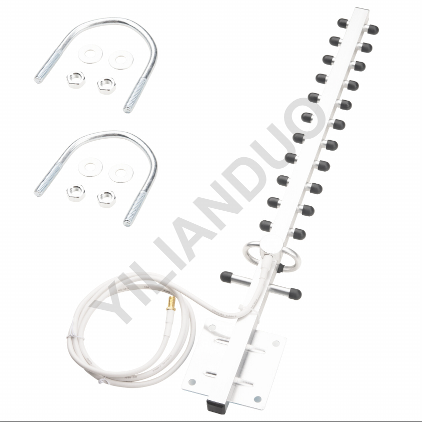
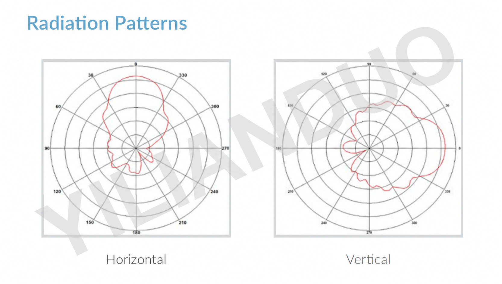

工作频段
1710–2700 MHz
RF CONNECTOR / PRODUCT SPECIFICATION
4G/LTE 定向八木天线
YX-6647 是一款 4G/LTE 定向八木天线，工作频段为 1710–2700 MHz，采用多振子结构和立杆安装方式。

CORE SPECIFICATIONS
工作频段
1710–2700 MHz
标称增益
15–17 dBi
阻抗
50 Ω
驻波比
≤ 1.8
水平 / 垂直波束角
30° / 30°
接口 / 馈线
N 型母头；RG58U 馈线，56 cm
TECHNICAL SPECIFICATIONS
| 参数 Parameter | 规格 Specification |
|---|---|
| 产品与电气参数 | |
| 类型 | 4G/LTE 定向八木天线 |
| 工作频段 | 1710–2700 MHz |
| 标称增益 | 15–17 dBi |
| 阻抗 | 50 Ω |
| 驻波比 | ≤ 1.8 |
| 极化 | 垂直或水平安装 |
| 水平 / 垂直波束角 | 30° / 30° |
| 前后比 | > 28 dB |
| 最大输入功率 | 100 W |
| 接口与安装 | |
| 接口 / 馈线 | N 型母头；RG58U 馈线，56 cm |
| 安装方式 | 立杆安装，适配杆径 Φ30–50 mm |
TEST CURVES

CONTACT
电话： 13352990798